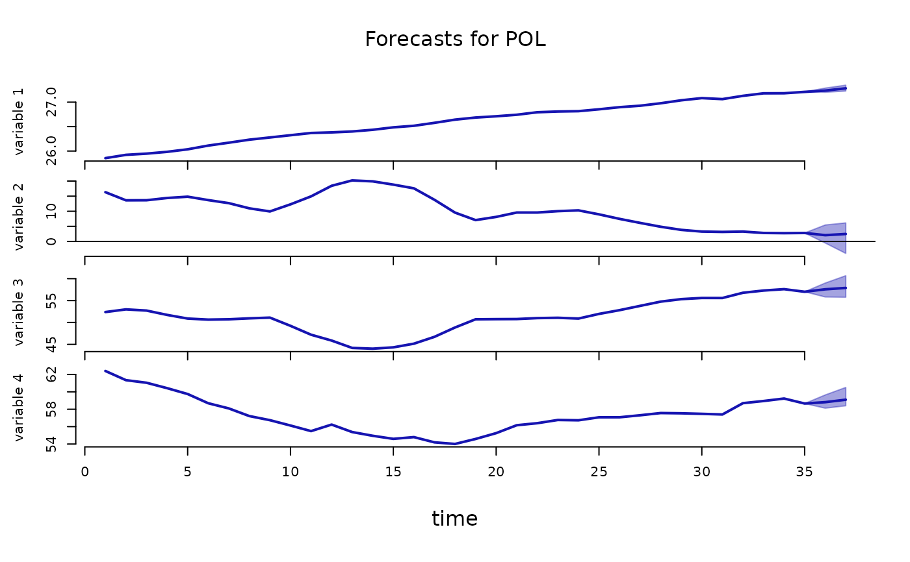
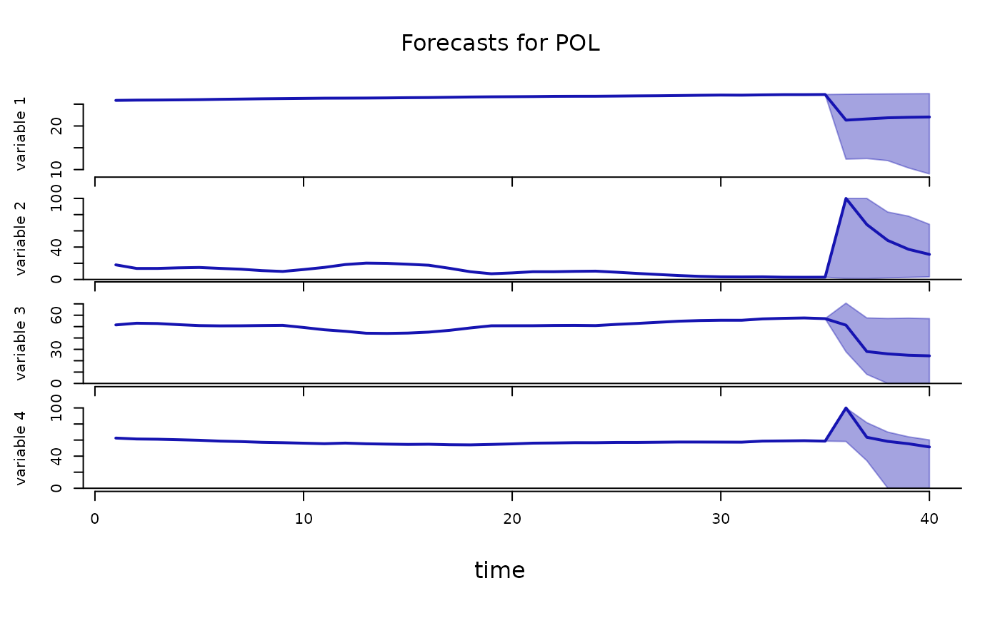

Provides Bayesian estimation and forecasting of dynamic panel data using Bayesian Panel Vector Autoregressions with hierarchical prior distributions. The model includes country-specific VARs that share a global prior distribution. Under this prior expected value, each country's system follows a global VAR with country-invariant parameters. Further flexibility is provided by the hierarchical prior structure that retains the Minnesota prior interpretation for the global VAR and features estimated prior covariance matrices, shrinkage, and persistence levels. Bayesian forecasting is developed for models including exogenous variables, allowing conditional forecasts given the future trajectories of some variables and restricted forecasts assuring that rates are forecasted to stay positive and less than 100. The package implements the model specification, estimation, and forecasting routines, facilitating coherent workflows and reproducibility. Beautiful plots, informative summary functions, and extensive documentation complement all this. An extraordinary computational speed is achieved thanks to employing frontier econometric and numerical techniques and algorithms written in C++. The 'bpvars' package is aligned regarding objects, workflows, and code structure with the R packages 'bsvars' by Woźniak (2024) doi:10.32614/CRAN.package.bsvars and 'bsvarSIGNs' by Wang & Woźniak (2024) doi:10.32614/CRAN.package.bsvarSIGNs , and they constitute an integrated toolset. Copyright: 2024 International Labour Organization.
Details
The package provides a set of functions for predictive analysis with the Bayesian Hierarchical Panel Vector Autoregression.
The Model. The model specification is initiated using function
specify_bvarPANEL that creates an object of class
BVARPANEL containing the prior specification, starting values for
estimation, data matrices, and the setup of the Monte Carlo Markov
Chain sampling algorithm.
The model features country-specific Vector Autoregressive
(VAR) equation for N dependent variables with T_c observations
for each country c. Its equation is given by
$$\mathbf{Y}_c = \mathbf{A}_c\mathbf{X}_c + \mathbf{E}_c$$
where \(\mathbf{Y}_c\) is an T_c x N matrix of dependent variables for
country c, \(\mathbf{X}_c\) is a T_c x K matrix of explanatory
variables, \(\mathbf{E}_c\) is an T_c x N matrix of error terms, and
\(\mathbf{A}_c\) is an NxK matrix of country-specific autoregressive slope
coefficients and parameters on deterministic terms in \(\mathbf{X}_c\). The
parameter matrix \(\mathbf{A}_c\) includes autoregressive matrices capturing the
effects of the lagged vectors of dependent variables at lags from 1 to p,
a constant term and a set of exogenous variables.
The error terms for each of the periods have zero conditional mean and
conditional covariance given by the NxN matrix \(\mathbf{\Sigma}\). The errors
are jointly normally distributed and serially uncorrelated. These
assumptions are summarised using a matrix-variate normal distribution
(see Woźniak, 2016):
$$\mathbf{E}_c \sim MN(\mathbf{0}_{T_c x N}, \mathbf{\Sigma}, \mathbf{I}_{T_c})$$
where the identity matrix \(\mathbf{I}_{T_c}\) of order T_c and joint
normality imply no serial autocorrelation. Matrix \(\mathbf{0}_{T_c x N}\)
denotes a T_c x N matrix of zeros.
Global Prior Distributions. The Hierarchical Panel VAR model features a sophisticated hierarchical prior structure that grants the model flexibility, interpretability, and improved forecasting performance.
The country-specific parameters follow a prior distribution that, at its
mean value, represents a global VAR model with a global autoregressive
parameter matrix \(\mathbf{A}\) of dimension KxN and an NxN global
covariance matrix \(\mathbf{\Sigma}\):
$$\mathbf{Y}_c = \mathbf{AX}_c + \mathbf{E}_c$$
This global VAR model under the prior mean is represented by the parameters
of the matrix-variate normal inverted Wishart distribution (see Woźniak, 2016)
given by:
$$\mathbf{A}_c, \mathbf{\Sigma}_c | \mathbf{A}, \mathbf{V}, \mathbf{\Sigma}, \nu \sim MNIW(\mathbf{A}, \mathbf{V}, (N - \nu - 1)\mathbf{\Sigma}, \nu)$$
where \(V\) is a KxK column-specific covariance matrix,
\((N - \nu - 1)\mathbf{\Sigma}\) is the row-specific matrix, and \(\nu > N+1\) is the
degrees-of-freedom parameter.
All of the parameters of the prior distribution above feature their own prior
distributions and are estimated. These prior distributions are given by:
$$\mathbf{A} | \mathbf{V}, m, w, s \sim MN (m\underline{\mathbf{M}}, \mathbf{V}, s\underline{\mathbf{S}} ) $$
with the KxN mean matrix \(m\underline{\mathbf{M}}\), the KxK
column-specific covariance matrix \(\mathbf{V}\), and the NxN matrix of
row-specific covariance \(s\underline{\mathbf{S}}\).
The global error term covariance matrix, \(\mathbf{\Sigma}\), follows a Wishart
distribution with NxN scale matrix \(s\underline{\mathbf{S}}_\Sigma\)
and shape parameter \(\underline{\mu}_\Sigma\)
$$\mathbf{\Sigma} | s, \nu \sim W(s\underline{\mathbf{S}}_\Sigma,\underline{\mu}_\Sigma)$$
Other Prior Distributions. The column-specific covariance \(\mathbf{V}\) follows the inverse-Wishart distribution with scale \(w\underline{\mathbf{W}}\) and shape \(\underline{\eta}\): $$\mathbf{V} | w \sim IW(w\underline{\mathbf{W}}, \underline{\eta})$$ The shape parameter \(\nu\) follows an exponential distribution with mean \(\underline\lambda\): $$\nu \sim\exp(\underline\lambda)$$ Finally, the priors for the remaining scalar hyper-parameters are: $$m \sim N(\underline{\mu}_m, \underline{\sigma}_m^2)$$ $$w \sim G(\underline{s}_w, \underline{a}_w)$$ $$s \sim IG2 (\underline{s}_s, \underline{\nu}_s)$$
The prior hyper-parameters in this note are grouped into those that are:
- fixed
and denoted using underscore, such as e.g. \(\underline{\mathbf{M}}\), \(\underline{\mu}_\Sigma\), or \(\underline{\nu}_s\). These hyper-parameters must be fixed and their default values are set by initiating the model specification using function
specify_bvarPANEL. These values can be accesses from such generated object in its elementpriorand can be modified by the user.- estimated
not featuring the underscore in the notation, such as e.g. \(\mathbf{A}\), \(\mathbf{\Sigma}\), or \(m\). These hyper-parameters are estimated and their posterior draws are available from an object generated after the estimation running the function
estimate.
Estimation.
The package implements Bayesian estimation using the Gibbs sampler. This
algorithm provides a sample of random draws from the posterior distribution
of the parameters of the model. The posterior distribution is defined by
Bayes' Rule stating that the posterior
distribution of the parameters given data and is proportional to the likelihood
function and the prior distribution of the parameters:
$$p(\mathbf{\theta} | \mathbf{Y}) \propto L(\mathbf{\theta}; \mathbf{Y}) p(\mathbf{\theta})$$
where \(\mathbf{\theta}\) collects all the parameters of the model to be
estimated. At each of its iterations a single draw of all of the
parameters of the model, including the estimated hyper-parameters, is obtained.
This Bayesian procedure estimates jointly all the parameters of the model and
is implemented in the estimate.BVARPANEL and
estimate.PosteriorBVARPANEL functions.
Forecasting. The package implements Bayesian forecasting providing the a sample of draws from the joint predictive density defined as the joint density of the future unknown values to be predicted, \(\mathbf{Y}_f\), given data, \(\mathbf{Y}\) closely following Karlsson (2013): $$p(\mathbf{Y}_f | \mathbf{Y})$$ The package offers the possibility of:
- forecasting for models with exogenous variables
given the provided future values of the exogenous variables.
- conditional predictions
given provided future projections for some of the variables.
- trucated forecasts
for variables that represents rates from the interval \([0,100]\).
The forecasting is performed using function forecast.PosteriorBVARPANEL.
References
Karlsson, S. (2013). Forecasting with Bayesian Vector Autoregression, in: Handbook of Economic Forecasting, Elsevier. volume 2, 791–897, doi:10.1016/B978-0-444-62731-5.00015-4 .
Woźniak, T. (2016). Bayesian Vector Autoregressions, Australian Economic Review, 49, 365-380, doi:10.1111/1467-8462.12179 .
Author
Tomasz Woźniak wozniak.tom@pm.me
Examples
# Basic estimation and forecasting example
############################################################
specification = specify_bvarPANEL$new(ilo_dynamic_panel) # specify the model
burn_in = estimate(specification, S = 10) # run the burn-in; use say S = 10000
#> **************************************************|
#> bpvars: Forecasting with Bayesian Panel VARs |
#> **************************************************|
#> Progress of the MCMC simulation for 10 draws
#> Every draw is saved via MCMC thinning
#> Press Esc to interrupt the computations
#> **************************************************|
posterior = estimate(burn_in, S = 10) # estimate the model; use say S = 10000
#> **************************************************|
#> bpvars: Forecasting with Bayesian Panel VARs |
#> **************************************************|
#> Progress of the MCMC simulation for 10 draws
#> Every draw is saved via MCMC thinning
#> Press Esc to interrupt the computations
#> **************************************************|
predictive = forecast(posterior, 2) # forecast the future
#> **************************************************|
#> bpvars: Forecasting with Bayesian Panel VARs |
#> **************************************************|
#> Progress of sampling 10 draws from
#> the predictive density for 189 countries
#> Press Esc to interrupt the computations
#> **************************************************|
# workflow with the pipe |>
ilo_dynamic_panel |>
specify_bvarPANEL$new() |>
estimate(S = 20) |>
estimate(S = 20) |>
forecast(horizon = 2) -> predictive
#> **************************************************|
#> bpvars: Forecasting with Bayesian Panel VARs |
#> **************************************************|
#> Progress of the MCMC simulation for 20 draws
#> Every draw is saved via MCMC thinning
#> Press Esc to interrupt the computations
#> **************************************************|
#> **************************************************|
#> bpvars: Forecasting with Bayesian Panel VARs |
#> **************************************************|
#> Progress of the MCMC simulation for 20 draws
#> Every draw is saved via MCMC thinning
#> Press Esc to interrupt the computations
#> **************************************************|
#> **************************************************|
#> bpvars: Forecasting with Bayesian Panel VARs |
#> **************************************************|
#> Progress of sampling 20 draws from
#> the predictive density for 189 countries
#> Press Esc to interrupt the computations
#> **************************************************|
plot(predictive, which_c = "POL")

# Full estimation and forecasting example with
# exogenous variables, conditional forecasts, and truncation for rates
############################################################
specification = specify_bvarPANEL$new(
ilo_dynamic_panel,
exogenous = ilo_exogenous_variables,
type = c("real", rep("rate", 3))
)
burn_in = estimate(specification, S = 10) # run the burn-in; use say S = 10000
#> **************************************************|
#> bpvars: Forecasting with Bayesian Panel VARs |
#> **************************************************|
#> Progress of the MCMC simulation for 10 draws
#> Every draw is saved via MCMC thinning
#> Press Esc to interrupt the computations
#> **************************************************|
posterior = estimate(burn_in, S = 10) # estimate the model; use say S = 10000
#> **************************************************|
#> bpvars: Forecasting with Bayesian Panel VARs |
#> **************************************************|
#> Progress of the MCMC simulation for 10 draws
#> Every draw is saved via MCMC thinning
#> Press Esc to interrupt the computations
#> **************************************************|
predictive = forecast(
posterior,
horizon = 6,
exogenous_forecast = ilo_exogenous_forecasts,
conditional_forecast = ilo_conditional_forecasts
)
#> **************************************************|
#> bpvars: Forecasting with Bayesian Panel VARs |
#> **************************************************|
#> Progress of sampling 10 draws from
#> the predictive density for 189 countries
#> Press Esc to interrupt the computations
#> **************************************************|
plot(predictive, which_c = "POL")
